Tutorial: Protein Folding with Quantum Approximate Optimization Algorithm (QAOA)
by: Hanna Linn, WACQT Chalmers
This tutorial walks through performing protein folding of the hydrophobic-polar lattice model in two dimensions using Quantum Approximate Optimization Algorithm (QAOA).
Overview
In this tutorial, we start by defining our amino acid sequence of what we want to fold together with a lattice grid on which we want to fold our sequence. We then define an energy function that, given a folding (placement) of the sequence on the grid, gives us a potential. The goal is to find the folding with the lowest potential, called the native state of the amino acid sequence. We usually have more than one native state, all with the same energy. The process can be defined as an optimisation:
Given an energy function, \(E(x)\), and a folding \(x\):
where \(F\) is the feasible solution set of the problem, i.e., all \( x \in F\) translates to physically possible protein folding.
For details of the energy function used in this tutorial, please see Irbäck et al. 2022: https://journals.aps.org/prresearch/abstract/10.1103/PhysRevResearch.4.043013
Here, we aim to do the optimisation with the Quantum Approximate Optimization Algorithm (QAOA) using Pennylane https://pennylane.ai/qml/demos/tutorial_qaoa_intro
%load_ext autoreload
%autoreload 2
import pennylane as qml
from pennylane import qaoa
from pennylane import numpy as np
import matplotlib.pyplot as plt
import networkx as nx
from collections import defaultdict
from matplotlib.ticker import MultipleLocator, NullFormatter, MaxNLocator
import math
from itertools import product
import matplotlib
from matplotlib import cm
from datetime import datetime
Protein model
The HP-lattice model in two dimensions has two types of beads: H for hydrophobic and P for polar. We can make an instance of the model by defining the sequence with 1 for H and 0 for P and a lattice grid size.
The model is described in detail in Sec II. “Methods” part B “Binary quadratic model for HP lattice proteins – QUBO encoding” in Irbäck et al. 2022. https://journals.aps.org/prresearch/abstract/10.1103/PhysRevResearch.4.043013
The energy function can be defined as:
where \(E_{HP}\) is the energy term for the HP model and the terms \(E_1\), \(E_2\) and \(E_3\) are constraint energies with the penalty vector \(\lambda_i,\ i=1,2,3\) controlling the strength of the constraints.
where \(\sigma_s^f\) to describe the location of the even beads. The index \(f\) is the beads and \(s\) is the sites (’ are the odd beads and sites). The \(\sigma_s^f=1\) if bead \(f\) is located on site \(s\), and \(\sigma_s^f=0\) otherwise, same for odds. The sites and beads are divided into odds and even to reduce the number of bits required from the number of amino acids times the area of the grid to half.
The terms in the energy function can be clumped together to one-body energy \(O_i\), and two-body interaction \(T_{ij}\), the pairwise interaction potentials. The energy function to optimize can be written as
where \(x_i\) is a bitstring representing the folding on the lattice. \(x_1\) is the choise, 1 for yes and 0 for no, of putting the first amino acid on position (0,0) on the grid.
'''
This cell is backend code. Don't mind it. Just run the cell.
HP-lattice Coordninate-based HP-lattice model
Written by Hanna Linn, hannlinn@chalmers.se
Based on Lucas Knuthsons code.
If used, please cite Irbäck et al. 2022:
https://journals.aps.org/prresearch/abstract/10.1103/PhysRevResearch.4.043013
'''
class CoordinateBased_HPLattice:
'''
Class for one instance of the 2D lattice HP-model to then be fed into the quantum simulation.
Class variables in order of creation [type]:
After init:
- dim_lattice = dimensions of the lattice (rows, columns) [tuple of two ints]
- lambda_vector = penalty terms for the energy terms [tuple of three ints]
- sequence = Given sequence of the problem. Sequence format: H is 1 and 0 is P, e.g., [H, P, P, H] = [1, 0, 0, 1]. [list of int/binaries]
- Q = dict with energy info [dictionary]
- bit_name_list = names of the qubits saved in a list. Name format: (node [tuple], seq [int]) [list of tuples]
- num_bits = number of bits in the instance [int]
- O_energies = one-body energies [list of floats]
- T_energies = two-body energies [list of Numpy Arrays with floats]
- Dn = Dn vector [number of nodes for placements for each amino acid in sequence] [list] DOES NOT WORK FOR RECTANGULAR LATTICES!!!
After function call:
- feasible_set = Numpy arrays of all feasible bitstrings solutions in one-hot encoding [list of Numpy Arrays]
- solution_set = Numpy arrays of all bitstring solutions in one-hot encoding [list of Numpy Arrays]
'''
def __init__(self, dim_lattice, sequence, lambda_vector = (1, 1, 1)):
self.dim_lattice = dim_lattice
self.lambda_vector = lambda_vector # best lambdas: lambda_1, lambda_2, lambda_3 = 1, 2, 1.5
self.sequence = sequence
self.Q = self.make_Q()
self.bit_name_list = self.get_bit_names()
self.num_bits = len(self.bit_name_list)
self.O_energies = self.get_O_energies()
self.T_energies = self.get_T_energies()
self.Dn = self.get_Dn()
def __str__(self):
return '\nO:\n' + str(self.O_energies) + '\nT:\n' + str(self.T_energies)
def get_H_indices(self):
'''
The following lists are lists of the indices where
Hs are positioned.
Used in make_Q.
Based on code by: Lucas Knuthson
'''
H_index_even = [i for i in range(len(self.sequence)) if self.sequence[i] == 1 and i % 2 == 0]
H_index_odd = [i for i in range(len(self.sequence)) if self.sequence[i] == 1 and i % 2 == 1]
return H_index_even, H_index_odd
def combos_of_H(self):
'''
Used in make_Q.
Based on code by: Lucas Knuthson
'''
H_index_even, H_index_odd = self.get_H_indices()
H_combos = []
for even in H_index_even:
for odd in H_index_odd:
H_combos.append((even, odd))
return H_combos
def split_evenodd(self):
'''
Split the sequence into a lists of odd and even beads.
Cates = categories.
Used in make_Q.
Based on code by: Lucas Knuthson
'''
cates_even = [i for i in range(len(self.sequence)) if i%2 == 0]
cates_odd = [i for i in range(len(self.sequence)) if i%2 == 1]
return cates_even, cates_odd
def make_Q(self, verbose = False):
'''
Q is the interactions in the ising model.
Two-body energy: (q_1, q_2) = value
One-body energy: (q_1, q_1) = value
bit format: (node, seq. index)
Node format: (row, col)
Based on code by: Lucas Knuthson
'''
Q = defaultdict(int)
cates_even, cates_odd = self.split_evenodd()
G = nx.grid_2d_graph(self.dim_lattice[0], self.dim_lattice[1]) # makes a lattice as a graph
# EPH
H_combos = self.combos_of_H()
count_HP = 0
#print('HP')
for u,v in G.edges():
for x,y in H_combos:
if (x-y)**2 > 4:
if sum(u) % 2 != 1 and sum(v) % 2 == 1:
Q[((u,x), (v,y))] -= 1
count_HP += 1
#print('-', ((u,x), (v,y)))
elif sum(u) % 2 == 1 and sum(v) % 2 != 1:
Q[((v,x), (u,y))] -= 1
count_HP += 1
#print('-', ((v,x), (u,y)))
# Sums over the squared sums, lambda 1
count_onper = 0
#print('Sums over the squared sums')
#even
for i in cates_even:
# One body
for u in G.nodes():
if sum(u) % 2 != 1:
Q[((u,i), (u,i))] -= 1*self.lambda_vector[0]
count_onper += 1
#print('-', ((u,i), (u,i)))
# Two body
for u in G.nodes():
for v in G.nodes():
if u != v and (sum(u) % 2 != 1 and sum(v) % 2 != 1) :
Q[((u,i),(v,i))] += 2*self.lambda_vector[0]
count_onper += 1
#print(((u,i),(v,i)))
#odd
for i in cates_odd:
# One body
for u in G.nodes():
if sum(u) % 2 == 1:
Q[((u,i),(u,i))] -= 1*self.lambda_vector[0]
count_onper += 1
#print('-', ((u,i),(u,i)))
# Two body
for u in G.nodes():
for v in G.nodes():
if u != v and (sum(u) % 2 == 1 and sum(v) % 2 == 1):
Q[((u,i),(v,i))] += 2*self.lambda_vector[0]
count_onper += 1
#print(((u,i),(v,i)))
# self-avoidance, lambda 2
#print('self-avoidance')
count_sa = 0
for u in G.nodes():
if sum(u) % 2 != 1: # even beads
for x in cates_even:
for y in cates_even:
if x != y and x < y:
Q[((u,x), (u,y))] += 1*self.lambda_vector[1]
count_sa += 1
#print(((u,x), (u,y)))
elif sum(u) % 2 == 1: # odd beads
for x in cates_odd:
for y in cates_odd:
if x != y and x < y:
Q[((u,x), (u,y))] += 1*self.lambda_vector[1]
count_sa += 1
#print(((u,x), (u,y)))
# Connectivity sums, lambda 3
# Even
#print('Connectivity sums')
count_con = 0
for i in cates_even:
for u in G.nodes():
for v in G.nodes():
if (((u,v) in G.edges()) == False and ((v,u) in G.edges()) == False) and u != v:
if sum(u) % 2 != 1 and sum(v) % 2 == 1 and len(self.sequence) % 2 == 0:
count_con += 1
#print(((u,i), (v,i+1)))
Q[((u,i), (v,i+1))] += 1*self.lambda_vector[2]
elif sum(u) % 2 != 1 and sum(v) % 2 == 1 and len(self.sequence) % 2 == 1:
if i != cates_even[-1]:
Q[((u,i), (v,i+1))] += 1*self.lambda_vector[2]
count_con += 1
#print(((u,i), (v,i+1)))
# Odd
for i in cates_odd:
for u in G.nodes():
for v in G.nodes():
if (((u,v) in G.edges()) == False and ((v,u) in G.edges()) == False) and u != v:
if (sum(u) % 2 != 1 and sum(v) % 2 == 1) and len(self.sequence) % 2 == 1:
Q[((u,i+1), (v,i))] += 1*self.lambda_vector[2]
count_con += 1
#print(((u,i+1), (v,i)))
elif (sum(u) % 2 != 1 and sum(v) % 2 == 1) and len(self.sequence) % 2 == 0:
if i != cates_odd[-1]:
count_con += 1
#print(((u,i+1), (v,i)))
Q[((u,i+1), (v,i))] += 1*self.lambda_vector[2]
if verbose:
print('Counts:')
print('HP: ', count_HP)
print('onper, lambda 1: ', count_onper)
print('self-avoidance, lambda 2: ', count_sa)
print('connectivity, lambda 3: ', count_con)
Q = dict(Q) # not a defaultdict anymore to not be able to grow by error
return Q
def get_node_list(self, verbose = False):
'''
Returns a list of the nodes in the right order: snakey!
Verbose will print resulting list and saves a .png of the graph.
'''
node_list = []
(Lrow, Lcol) = self.dim_lattice
G = nx.grid_2d_graph(Lrow, Lcol)
for row in range(Lrow):
start_index = row * Lcol
if row % 2 == 0: # even row is forward
node_list.extend(list(G.nodes())[start_index:start_index + Lcol])
if row % 2 == 1: # odd row is backward
node_list.extend(reversed(list(G.nodes())[start_index:start_index + Lcol]))
if verbose:
nx.draw(G, with_labels=True)
plt.savefig('Lattice')
print(node_list)
return node_list
def get_bit_names(self):
'''
Returns a list of all the bitnames in the form (node (row, col), seq) in the right order.
'''
seq_index = range(len(self.sequence))
node_list = self.get_node_list(verbose = False)
bit_name_list = []
L_2 = int(self.dim_lattice[0]*self.dim_lattice[1])
nodes_even = [x for x in range(L_2) if x % 2 == 0]
nodes_odd = [x for x in range(L_2) if x % 2 != 0]
# for all even nodes with first index aso
for f in seq_index:
if f % 2 == 0:
for s in nodes_even:
bit_name_list.append((node_list[s], f))
if f % 2 == 1:
for s in nodes_odd:
bit_name_list.append((node_list[s], f))
return bit_name_list
def get_O_energies(self):
'''
Get the one-body energies for the Hamiltonian.
'''
O_energies = []
for bit in self.bit_name_list:
try:
O_energies.append(self.Q[(bit, bit)])
except:
pass
return O_energies
def get_T_energies(self):
'''
Get the two-body energies for the Hamiltonian.
'''
T_energies = np.zeros((self.num_bits, self.num_bits))
for j in range(self.num_bits):
for k in range(self.num_bits):
if j == k:
T_energies[j,k] = 0
else:
try:
T_energies[j,k] = self.Q[self.bit_name_list[j], self.bit_name_list[k]]
if j > k:
T_energies[k,j] = self.Q[self.bit_name_list[j], self.bit_name_list[k]]
except:
pass
T_energies = np.triu(T_energies) # delete lower triangle
T_energies = T_energies + T_energies.T - np.diag(np.diag(T_energies)) # copy upper triangle to lower triangle
return T_energies
def get_Dn(self):
'''
Cardinality vector. Used for XY-mixer.
'''
D = []
for seq in range(len(self.sequence)):
if seq % 2 == 0:
D.append(math.ceil((self.dim_lattice[0]*self.dim_lattice[1])/2))
if seq % 2 == 1:
D.append(math.floor((self.dim_lattice[0]*self.dim_lattice[1])/2))
return D
def get_feasible_percentage(self):
return 100*(len(self.feasible_set)/len(self.solution_set))
def get_solution_set(self):
'''
Input: Number of bits.
Output: Numpy arrays of dimensions (1, num_bits) in a list of all possible bitstrings.
'''
return [np.array(i) for i in product([0, 1], repeat = self.num_bits)]
def get_feasible_set(self):
'''
Output: Numpy arrays of all feasible solutions, in a list.
Hamming distance is 1 at each position.
'''
feasible_list = []
index_list = []
start = 0
for rot in self.Dn:
stop = start + rot
index_perm = [x for x in range(start, stop)]
index_list.append(index_perm)
start = stop
comb = list(product(*index_list))
for i in comb:
state = np.zeros(self.num_bits)
for j in i:
state[j] = 1
feasible = True
# same node and on?
for b in range(self.num_bits):
node1 = self.bit_name_list[b][0]
node2 = self.bit_name_list[(b + self.dim_lattice[0]*self.dim_lattice[1]) % self.num_bits][0]
if (node1 == node2) and state[b] and state[(b + self.dim_lattice[0]*self.dim_lattice[1]) % self.num_bits]:
feasible = False
break
# longer distance than 1 manhattan distance
if feasible:
for bit1 in range(len(state)):
found = False
if state[bit1] == 1:
for bit2 in range(bit1+1, len(state)):
if state[bit2] == 1 and not found:
found = True
node1 = self.bit_name_list[bit1][0]
node2 = self.bit_name_list[bit2][0]
if self.manhattan_dist(node1, node2) > 1:
feasible = False
break
else:
continue
if feasible:
feasible_list.append(state)
return feasible_list
def manhattan_dist(self, node1, node2):
distance = 0
for node1_i, node2_i in zip(node1, node2):
distance += abs(node1_i - node2_i)
return int(distance)
def calc_solution_sets(self):
'''
May take a while.
'''
self.feasible_set = self.get_feasible_set()
self.solution_set = self.get_solution_set()
def bit2energy(self, bit_array):
Oe = np.dot(bit_array, self.O_energies)
Te = 0
for j,bit in enumerate(self.bit_name_list):
for k,bit in enumerate(self.bit_name_list):
if bit_array[j] == 1.0 and bit_array[k] == 1.0:
Te += self.T_energies[j,k]
energy = Oe + Te
return energy
def energy_of_set(self, feasible = False, verbose = False):
energy_list = []
labels = []
mem = 1000000
lowest_energy_bitstring = None
if feasible:
set_ = self.feasible_set
else:
set_ = self.solution_set
for i in range(len(set_)):
energy = self.bit2energy(set_[i])
if verbose and (i%1000==0):
print('Progress in energy calculations: ', round(100*i/len(set_), 1), '%%')
try:
energy = self.bit2energy(set_[i])
if energy < mem:
lowest_energy_bitstring = [set_[i], i, energy]
mem = energy
label = str(set_[i])
label = label.replace(',', '')
label = label.replace(' ', '')
label = label.replace('.', '')
labels.append(label)
except:
energy = 1000000
if not feasible:
label = str(set_[i])
label = label.replace(',', '')
label = label.replace(' ', '')
label = label.replace('.', '')
labels.append(label)
energy_list.append(energy)
print('Done!')
return energy_list, labels, lowest_energy_bitstring
def viz_solution_set(self, energy_for_set, labels, lowest_energy, title = '', sort = False):
x = np.array(energy_for_set)
if sort:
sort_idx = x.argsort()
x = x[sort_idx]
labels = np.array(labels)[sort_idx]
fig, ax = plt.subplots(figsize=(18, 4))
plt.style.use("seaborn")
matplotlib.rc('xtick', labelsize=12)
ax.bar(range(len(energy_for_set)), x, tick_label = labels)
if not sort:
theoretical_lowest_idx = lowest_energy[1]
ax.get_xticklabels()[theoretical_lowest_idx].set_color("green")
else:
ax.get_xticklabels()[0].set_color("green")
plt.xlabel('Bitstrings')
plt.xticks(rotation=85)
plt.ylabel('Classic energy')
plt.title(r'Classic energy for ' + title + ' bitstrings')
def bit2coord(self, bit):
x = []
y = []
for i in range(len(bit)):
if int(bit[i]):
x.append(self.bit_name_list[i][0][0])
y.append(self.bit_name_list[i][0][1])
return x, y
def viz_lattice(self, bit):
x_grid = range(self.dim_lattice[0])
x_grid = [-x for x in x_grid]
y_grid = range(self.dim_lattice[0])
protein_grid = [0] * self.dim_lattice[0]
plt.scatter(y_grid, x_grid, c=protein_grid, cmap='Greys', s=10)
x, y = self.bit2coord(bit)
#x = [0, 0, 1, 1]
x = [-x for x in x]
#y = [0, 1, 1, 0]
plt.plot(y, x, 'k-', zorder=0) # straight lines
# large dots, set zorder=3 to draw the dots on top of the lines
plt.scatter(y, x, c=self.sequence, cmap='coolwarm', s=1500, zorder=3)
plt.margins(0.2) # enough margin so that the large scatter dots don't touch the borders
plt.gca().set_aspect('equal') # equal distances in x and y direction
plt.axis('on')
ax = plt.gca()
ax.xaxis.set_major_locator(MultipleLocator(1))
ax.xaxis.set_major_formatter(NullFormatter())
ax.yaxis.set_major_locator(MultipleLocator(1))
ax.yaxis.set_major_formatter(NullFormatter())
ax.tick_params(axis='both', length=0)
plt.grid(True, ls=':')
plt.title(str(bit))
for i in range(len(self.sequence)):
plt.annotate(i, (y[i], x[i]), color='white', fontsize=24, weight='bold', ha='center')
# ------------- util functions
def sort_over_threshhold(x, threshhold):
mask = x > threshhold
sort_idx = x.argsort()
mask_idx = sort_idx[mask[sort_idx]]
return x[mask_idx], mask_idx
def plot_probs_with_energy(probs, num_qubits, H_cost, ground_states_i, new_fig = True, save = False, name = '', threshhold = 0.001):
'''
Plots given probailities with the corresponding bitstrings.
'''
x, mask_idx = sort_over_threshhold(probs, threshhold) # probabilities
if len(x) < 1:
print('No solutions with a probability over the given threshhold: ', threshhold)
indices = np.arange(len(probs), dtype = int)[mask_idx]
labels_y = index_set2bit_string(indices, num_qubits) # bit strings
y = np.array([x for x in energies_of_set(indices, H_cost, num_qubits)]) # energies of the set
if new_fig:
plt.figure(np.random.randint(10, 30))
fig, ax = plt.subplots(figsize = (15, 7), constrained_layout = True)
cmap = plt.get_cmap('coolwarm', len(y))
scat = ax.scatter(y, y, c = y, cmap = cmap) # get the color of the sidebar correct
plt.cla() # clear plot
cbar = plt.colorbar(scat) # colorbar on the side
cbar.set_label('Classic energy', labelpad = 15, fontsize = 20)
norm = matplotlib.colors.Normalize(vmin = np.min(y), vmax = np.max(y))
norms = norm(y)
colors = matplotlib.cm.coolwarm(norms) # get the colors of the columns
ax.bar(range(len(x)), x, color = colors) # plot the columns with the probabilities as the hight of the bar, colors are classical energy
plt.xticks(ticks = range(len(y)), labels = labels_y) # bit strings as labels
# mark out the best bit in green
for i in range(len(y)):
if round(float(y[i]), 4) == round(energy_of_index(ground_states_i[0], H_cost), 4):
ax.get_xticklabels()[i].set_color("green")
plt.ylabel('Probability', fontsize = 20)
plt.title(r'Probability of measuring bit strings with energy', fontsize = 25)
matplotlib.rc('xtick', labelsize = 20)
matplotlib.rc('ytick', labelsize = 17)
plt.xticks(rotation = 85)
if save:
now = datetime.now()
date_time = now.strftime("%m_%d_%Y")
plt.savefig(name + '_probs_with_energy_' + date_time+'.pdf')
# Energy functions
def energies_of_set(_set, H_cost, num_qubits):
'''
Set can be indices or arrays.
'''
try:
if len(_set[0]) >= num_qubits:
indices = bit_array_set2indices(_set)
except:
indices = _set
energies_index_states = get_energies_index_states(H_cost)
energies = np.take(energies_index_states, indices)
return energies
def get_energies_index_states(H_cost):
#print('\nCalculating energy of states')
energy_list = []
matrix = H_cost.sparse_matrix()
return matrix.diagonal().real.round(8) # some weird thing at the conversion demands a round, it should not matter at 8th decimal
def energy_of_index(index, H_cost):
energies_index_states = get_energies_index_states(H_cost)
return energies_index_states[index]
# Ground states
def get_ground_states_i(feasible_set, H_cost):
indices_of_feasible = bit_array_set2indices(feasible_set)
energies_of_feasible = energies_of_set(indices_of_feasible, H_cost, len(feasible_set[0]))
ground_energy = round(float(np.amin(energies_of_feasible)), 8) # just to avoid a weird 4 at the 20th decimal
ground_states_i = np.take(indices_of_feasible, np.where(energies_of_feasible <= ground_energy))[0]
return ground_energy, ground_states_i
# Transforms: strings <-> bit_array
def bit_array_set2indices(bit_array_set):
return np.array(list(map(bit_array2index, bit_array_set)))
def bit_array2index(bit_array):
return int((bit_array*(2**np.linspace(bit_array.size-1, 0, bit_array.size, dtype=np.uint64))).sum())
def index_set2bit_string(index_set, num_qubits):
'''
Input: Indices of a set of bit strings in a list, e.g. [12, 542, 1].
Output: The whole set of bits in a list, e.g. np array of bit string, e.g. [1000100, 110101, 101010].
'''
packed_index_set = []
for i in index_set:
temp = index2bit_string(i, num_qubits)
packed_index_set.append(temp)
return packed_index_set
def bit_array2string(state):
bit_string = ''
for c in state:
if int(c) == 1:
bit_string += '1'
elif int(c) == 0:
bit_string += '0'
return bit_string
def string2index(string):
return int(string, 2)
def index2bit_string(index, num_qubits):
'''
Input: Index in pennylane basis, to be used in e.g. probability vector.
Output: bit_string of a state as a string, e.g. '1000100'.
'''
string = bin(index)[2:]
while len(string) < num_qubits:
string = '0' + string
return string
# Grid search
def grid_search(start_gamma,
stop_gamma,
num_points_gamma,
start_beta,
stop_beta,
num_points_beta,
heuristic,
plot = True,
matplot_save = False,
above = False,
save = False,
vmap = False,
jax_GPU = False):
'''
Calculates the best parameters [gamma, beta], gives the lowest average cost, within the interval given.
'''
X, Y, batch_array = get_batch_array(start_gamma,
stop_gamma,
num_points_gamma,
start_beta,
stop_beta,
num_points_beta)
# gamma
X = np.linspace(start_gamma, stop_gamma, num_points_gamma)
# beta
Y = np.linspace(start_beta, stop_beta, num_points_beta)
if vmap:
import jax
from jax.config import config
config.update("jax_enable_x64", True)
if jax_GPU:
jit_circuit = jax.vmap(jax.jit(heuristic, backend='gpu')) # tries to allocate to much memory if GPU
else:
jit_circuit = jax.vmap(jax.jit(heuristic, backend='cpu')) # tries to allocate to much memory if GPU
Z = jit_circuit(batch_array)
Z = Z.reshape(len(X), len(Y))
else:
Z = np.zeros((num_points_gamma, num_points_beta))
for m,x in enumerate(X):
for l,y in enumerate(Y):
Z[m,l] = heuristic([[float(x)],[float(y)]])
# Find best Z
i = np.unravel_index(Z.argmin(), Z.shape)
if plot:
plot_grid_search(X, Y, Z, i, above=above, save = save)
if matplot_save:
mdic = {'Z_av': Z,
'X': np.linspace(start_gamma, stop_gamma, num_points_gamma),
'Y': np.linspace(start_beta, stop_beta, num_points_beta)}
now = datetime.now()
date_time = now.strftime("%m_%d_%Y")
savemat('Matlab_' + date_time + str(num_points_gamma) + '.mat', mdic)
gamma = float(X[i[0]])
beta = float(Y[i[1]])
return np.array([[gamma], [beta]]), Z, i
def get_batch_array(start_gamma,
stop_gamma,
num_points_gamma,
start_beta,
stop_beta,
num_points_beta):
# gamma
X = np.linspace(start_gamma, stop_gamma, num_points_gamma)
# beta
Y = np.linspace(start_beta, stop_beta, num_points_beta)
batch_list = []
for x in X:
for y in Y:
temp = np.array([[float(x)],[float(y)]], dtype=float)
batch_list.append(temp)
batch_array = np.array(batch_list, dtype=float)
return X, Y, batch_array
def plot_grid_search(X,
Y,
Z,
i,
above = False,
name = '',
save = False,
fontsize = 13):
fig = plt.figure(np.random.randint(51, 60), figsize=(12, 8), constrained_layout=True)
ax = fig.add_subplot(projection="3d")
xx, yy = np.meshgrid(X, Y, indexing='ij')
surf = ax.plot_surface(xx, yy, Z, cmap=cm.BrBG, antialiased=False)
ax.zaxis.set_label_coords(-1,1)
ax.zaxis.set_major_locator(MaxNLocator(nbins=5, prune="lower"))
ax.plot(X[i[0]], Y[i[1]], Z[i], c="red", marker="*", label="best params", zorder=10)
plt.legend(fontsize=fontsize)
plt.xticks(fontsize=fontsize)
plt.yticks(fontsize=fontsize)
plt.title(r'Best params: $\gamma$ ' + str(X[i[0]]) + r', $\beta$ ' + str(Y[i[1]]))
num_points_gamma = len(X)
ax.set_xlabel(r"$\gamma$ (cost parameter)", fontsize=fontsize)
ax.set_ylabel(r"$\beta$ (mixer parameter)", fontsize=fontsize)
ax.set_zlabel(name, fontsize=fontsize)
if save:
plt.savefig(name + '_num_gamma' + str(num_points_gamma) + '.pdf')
if above:
ax.view_init(azim=0, elev=90)
if save:
plt.savefig(name + '_above_num_gamma' + str(num_points_gamma) + '.pdf')
def vec_grid_search_p2(start_gamma,
stop_gamma,
num_points_gamma,
start_beta,
stop_beta,
num_points_beta,
heuristic,
vmap = False):
'''
Calculates the best parameters [gamma, beta] for p=2, gives the lowest cost, within the interval given.
If vmap is on then JAX and JIT is used for speeding up the calculations.
'''
# gamma
X1 = np.linspace(start_gamma, stop_gamma, num_points_gamma)
X2 = np.linspace(start_gamma, stop_gamma, num_points_gamma)
# beta
Y1 = np.linspace(start_beta, stop_beta, num_points_beta)
Y2 = np.linspace(start_beta, stop_beta, num_points_beta)
if vmap:
batch_list = []
for x1 in X1:
for x2 in X2:
for y1 in Y1:
for y2 in Y2:
temp = np.array([[float(x1), float(x2)],[float(y1), float(y2)]])
batch_list.append(temp)
print('Batch list done!')
batch_array = np.array(batch_list)
import jax
from jax.config import config
config.update("jax_enable_x64", True)
jit_circuit = jax.vmap(jax.jit(heuristic))
Z = jit_circuit(batch_array)
Z = Z.reshape(len(X1), len(X2), len(Y1), len(Y2))
else:
Z = np.zeros((num_points_gamma, num_points_gamma, num_points_beta, num_points_beta))
for xi, x1 in enumerate(X1):
for xj, x2 in enumerate(X2):
for yi,y1 in enumerate(Y1):
for yj, y2 in enumerate(Y2):
Z[xi, xj, yi, yj] = heuristic(np.array([[float(x1), float(x2)],[float(y1), float(y2)]]))
# Find best Z
i = np.unravel_index(Z.argmin(), Z.shape)
gamma1 = float(X1[i[0]])
gamma2 = float(X2[i[1]])
beta1 = float(Y1[i[2]])
beta2 = float(Y1[i[3]])
return np.array([[gamma1, gamma2], [beta1, beta2]]), Z
def get_annealing_params(annealing_time, p, linear = True, cosine = False, sine = False, save = False, plot = False):
'''
From Tutorial 3 AdvQuantumAlgorithms Course.
Sine function does not work.
'''
if sum([linear, cosine, sine]) >= 2:
raise Exception('Choose one schedule')
if sum([linear, cosine, sine]) == 0:
raise Exception('Choose a schedule')
annealing_params = np.zeros((2, p))
tau = annealing_time/p
if linear:
name = 'linear_'
for i in range(p):
annealing_params[0,i] = tau * (i+1-0.5) / p # gamma Trotterisation to 2nd order
annealing_params[1,i] = - tau * (1 - ((i+1)/p)) # beta
annealing_params[1,p-1] = - tau / (4*p) # Trotterisation to 2nd order
elif cosine:
name = 'cosine_'
B_function = lambda s : (np.cos(np.pi + (s)*np.pi) + 1)/2
for i in range(p):
annealing_params[0,i] = tau * B_function((i+1-0.5)/p)
annealing_params[1,i] = - (tau/2) * (2 - B_function((i+1+0.5)/p) - B_function((i+1-0.5)/p))
annealing_params[1,p-1] = - (tau/2) * (1-B_function((p-0.5)/p))
elif sine:
name = 'sine_'
B_function = lambda s : np.tan(-np.pi/2 + (s)*np.pi)
for i in range(p):
annealing_params[0,i] = tau * B_function((i+1-0.5)/p)
annealing_params[1,i] = - (tau/2) * (2 - B_function((i+1+0.5)/p) - B_function((i+1-0.5)/p))
annealing_params[1,p-1] = - (tau/2) * (1-B_function((p-0.5)/p))
if plot and not save:
raise Exception('Must save the parameters to be able to plot')
if save:
np.savetxt(name + '_params' +'.out', annealing_params, delimiter=',')
if plot:
plot_params(name, 1, p, save = True)
return annealing_params
def interpolate_params(params, only_last = False, save = False, plot = False):
'''
By Lucin appendix B, p 14
'''
p = params.shape[1]
params_vector = np.concatenate((params, np.full((2, 1), 0.0)), axis = 1)
params_p_plus1 = np.full((2, p+1), 0.0)
for i in range(0, p+1):
params_p_plus1[0,i] = ((i-1+1)/p)*params_vector[0, i-1] + ((p-(i+1)+1)/p)*params_vector[0,i]
params_p_plus1[1,i] = ((i-1+1)/p)*params_vector[1, i-1] + ((p-(i+1)+1)/p)*params_vector[1,i]
if only_last:
i = p
params_vector[0,i] = ((i-1+1)/p)*params_vector[0, i-1] + ((p-(i+1)+1)/p)*params_vector[0,i]
params_vector[1,i] = ((i-1+1)/p)*params_vector[1, i-1] + ((p-(i+1)+1)/p)*params_vector[1,i]
return_params = params_vector
else:
return_params = params_p_plus1
if plot and not save:
raise Exception('Must save the parameters to be able to plot')
if save:
name = 'interpolated'
np.savetxt(name + '_params' +'.out', return_params, delimiter=',')
if plot:
plot_params(name, 1, p+1, save = True)
return return_params
def plot_params(name, p_min, p_max, color = '', color2 = False, trained = '', save = False):
params = open(name + '_params' +'.out', 'r').readlines()
names = [r'$\gamma$', r'$\beta$']
colors = ['blue', 'green']
if color2:
colors = ['coral', 'seagreen']
markers = ['o', 's']
for i,line in enumerate(params):
line = np.fromstring(line, dtype=float, sep=',')
plt.plot(np.arange(p_min, p_max+1), line, label=trained+names[i], color=color+colors[i], marker=markers[i], linestyle='dashed', linewidth=2, markersize=9)
plt.legend(fontsize = 13)
plt.xlabel('p', fontsize = 19)
plt.yticks(fontsize = 19)
plt.grid(True)
plt.xticks(np.linspace(p_min, p_max, 3, dtype=int), fontsize = 13)
plt.ylabel('Radians', fontsize = 17)
if save:
plt.savefig('plot_params' + name + '.pdf', bbox_inches='tight')
def get_minimal_energy_gap(H_cost):
get_energies_index_states(H_cost)
return jnp.diff(jnp.unique(energies_index_states)).min()
# Make an instance for the protein
sequence = [1,0,0,1] #HPPH
L1 = 3
L2 = 2
lambda_vector = (2.1, 2.4, 3.0) # see Fig.2 in Irbäck et al.
protein = CoordinateBased_HPLattice((L1, L2), sequence = sequence, lambda_vector = lambda_vector)
print(protein)
protein.calc_solution_sets()
feasible_set = np.array(protein.feasible_set)
print()
print('What all bits are, on the format ((x,y)-coordninate on the grid, which index of the sequence): ', protein.get_bit_names(), '\n')
print('The number of bits needed to encode one folding: ', protein.num_bits, '\n')
print('The quotient of size of feasible set compared to the total solution set:', protein.get_feasible_percentage(), '\n')
O:
[-2.1, -2.1, -2.1, -2.1, -2.1, -2.1, -2.1, -2.1, -2.1, -2.1, -2.1, -2.1]
T:
[[ 0. 4.2 4.2 0. 0. 3. 2.4 0. 0. -1. -1. 0. ]
[ 4.2 0. 4.2 0. 0. 0. 0. 2.4 0. -1. -1. -1. ]
[ 4.2 4.2 0. 3. 0. 0. 0. 0. 2.4 0. -1. -1. ]
[ 0. 0. 3. 0. 4.2 4.2 0. 0. 3. 2.4 0. 0. ]
[ 0. 0. 0. 4.2 0. 4.2 0. 0. 0. 0. 2.4 0. ]
[ 3. 0. 0. 4.2 4.2 0. 3. 0. 0. 0. 0. 2.4]
[ 2.4 0. 0. 0. 0. 3. 0. 4.2 4.2 0. 0. 3. ]
[ 0. 2.4 0. 0. 0. 0. 4.2 0. 4.2 0. 0. 0. ]
[ 0. 0. 2.4 3. 0. 0. 4.2 4.2 0. 3. 0. 0. ]
[-1. -1. 0. 2.4 0. 0. 0. 0. 3. 0. 4.2 4.2]
[-1. -1. -1. 0. 2.4 0. 0. 0. 0. 4.2 0. 4.2]
[ 0. -1. -1. 0. 0. 2.4 3. 0. 0. 4.2 4.2 0. ]]
What all bits are, on the format ((x,y)-coordninate on the grid, which index of the sequence): [((0, 0), 0), ((1, 1), 0), ((2, 0), 0), ((0, 1), 1), ((1, 0), 1), ((2, 1), 1), ((0, 0), 2), ((1, 1), 2), ((2, 0), 2), ((0, 1), 3), ((1, 0), 3), ((2, 1), 3)]
The number of bits needed to encode one folding: 12
The quotient of size of feasible set compared to the total solution set: 0.341796875
# Draw the protein
print('First solution in the feasible solution set: ')
x = [True if x > 0 else False for x in feasible_set[0]]
y = protein.get_bit_names()
print([b for a, b in zip(x, y) if a])
protein.viz_lattice(feasible_set[0])
First solution in the feasible solution set:
[((0, 0), 0), ((0, 1), 1), ((1, 1), 2), ((1, 0), 3)]

# Draw all proteins in feasible solution set
for j,i in enumerate(feasible_set):
plt.figure(j)
protein.viz_lattice(i)
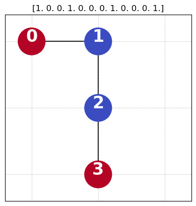
 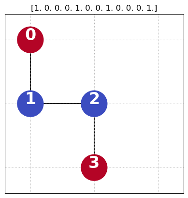
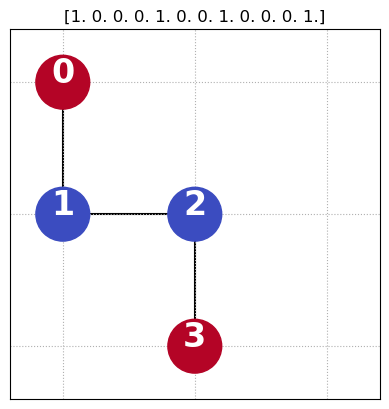


 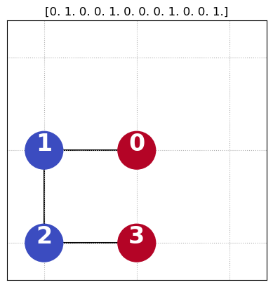
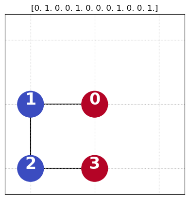
 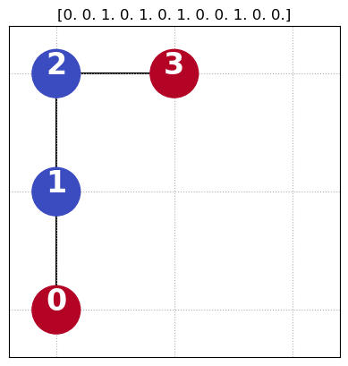
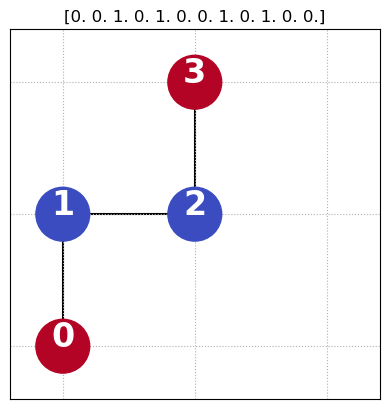
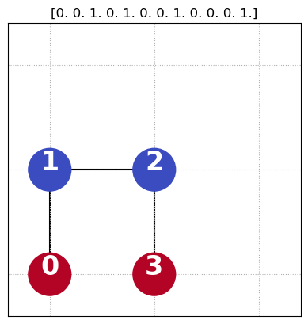
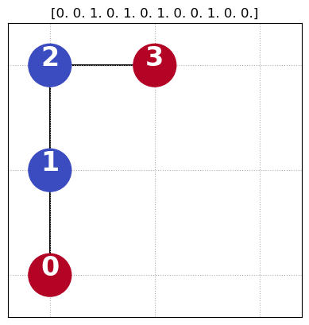
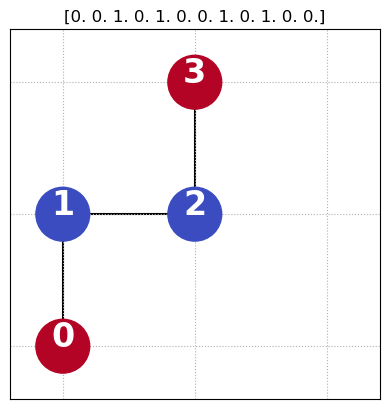
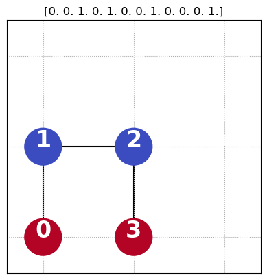
 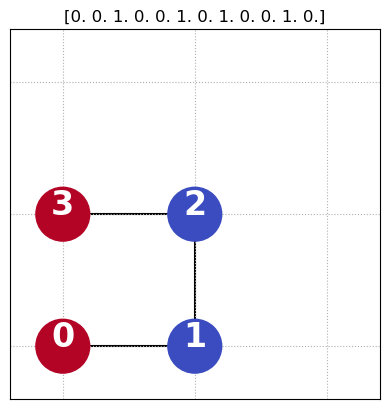
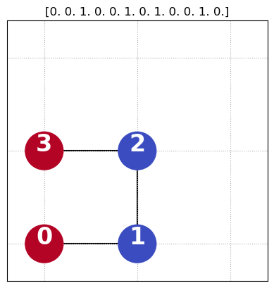
Quantum Approximate Optimization Algorithm (QAOA)
In QAOA, the circuit is done in a sequence of depth \(p\):
where \(\gamma\) and \(\beta\) are vectors of parameters to optimise by a classical computer so that the probability of measuring the optimal state is high.
The function to optimise is often the expectation value
where \(C_{\text{obj.}}\) is the energy function in our case. If we get the lowest expectation value, we should get the answer with the lowest energy.
For details on how to run QAOA in Pennylane: https://pennylane.ai/qml/demos/tutorial_qaoa_intro
Protein instance into cost Hamiltonian
Here, we create a cost Hamiltonian from the protein by translating the binary variables \(x_i=\{0,1\}\) to spin \(q_i=\{1,-1\}\) for the qubits. We end up with a problem on the form of an Ising Hamiltonian:
where \(h_i\) are the field constants applied to qubit \(i\) translated from the one-body energies, \(J_{ij}\) are the two-body interaction constants between qubit \(i\) and \(j\) translated from the two-body energies and \(\sigma^z\) is the Pauli operator in the \(z\)-direction.
def protein_folding_hamiltonian(ProteinInstance):
'''
Input: Protein instance from CoordinateBased_HPLattice or RotamerRosetta.
Returns: The hamiltonian for the protein instance.
'''
num_qubits = len(ProteinInstance.O_energies)
wires = range(ProteinInstance.num_bits)
O_coeffs = [-x/2 for x in ProteinInstance.O_energies]
T_coeffs = np.copy(ProteinInstance.T_energies)
for j in range(num_qubits):
for k in range(num_qubits):
T_coeffs[j,k] = T_coeffs[j,k]/4
H_cost = get_cost_hamiltonian(O_coeffs, T_coeffs, wires)
return H_cost
def get_cost_hamiltonian(O_coeffs, T_coeffs, wires):
H_cost_O = get_O_hamiltonian(O_coeffs, wires)
H_cost_T = get_T_hamiltonian(T_coeffs, wires)
return H_cost_O + H_cost_T
def get_O_hamiltonian(O_coeffs, wires):
return qml.Hamiltonian(O_coeffs, [qml.PauliZ(i) for i in wires])
def get_T_hamiltonian(T_coeffs, wires):
obs = []
coeffs = []
for j in wires:
for k in range(j+1, len(wires)):
coeffs.append(T_coeffs[j,k])
coeffs.append(-T_coeffs[j,k])
coeffs.append(-T_coeffs[j,k])
obs.append(qml.PauliZ(j) @ qml.PauliZ(k))
obs.append(qml.PauliZ(j))
obs.append(qml.PauliZ(k))
return qml.Hamiltonian(coeffs, obs)
# Make into Hamiltonian
H_cost = protein_folding_hamiltonian(protein)
num_qubits = protein.num_bits
qubits = range(protein.num_bits) # naming the qubits
print('H_cost:\n' + str(H_cost))
H_cost:
(-3.1500000000000004) [Z6]
+ (-3.1500000000000004) [Z8]
+ (-3.15) [Z3]
+ (-3.15) [Z5]
+ (-1.9) [Z9]
+ (-1.9) [Z11]
+ (-1.9) [Z0]
+ (-1.9) [Z2]
+ (-1.65) [Z7]
+ (-1.65) [Z4]
+ (-0.8999999999999999) [Z10]
+ (-0.8999999999999999) [Z1]
+ (-0.25) [Z0 Z9]
+ (-0.25) [Z0 Z10]
+ (-0.25) [Z1 Z9]
+ (-0.25) [Z1 Z10]
+ (-0.25) [Z1 Z11]
+ (-0.25) [Z2 Z10]
+ (-0.25) [Z2 Z11]
+ (0.0) [Z0 Z3]
+ (0.0) [Z0 Z4]
+ (0.0) [Z0 Z7]
+ (0.0) [Z0 Z8]
+ (0.0) [Z0 Z11]
+ (0.0) [Z1 Z3]
+ (0.0) [Z1 Z4]
+ (0.0) [Z1 Z5]
+ (0.0) [Z1 Z6]
+ (0.0) [Z1 Z8]
+ (0.0) [Z2 Z4]
+ (0.0) [Z2 Z5]
+ (0.0) [Z2 Z6]
+ (0.0) [Z2 Z7]
+ (0.0) [Z2 Z9]
+ (0.0) [Z3 Z6]
+ (0.0) [Z3 Z7]
+ (0.0) [Z3 Z10]
+ (0.0) [Z3 Z11]
+ (0.0) [Z4 Z6]
+ (0.0) [Z4 Z7]
+ (0.0) [Z4 Z8]
+ (0.0) [Z4 Z9]
+ (0.0) [Z4 Z11]
+ (0.0) [Z5 Z7]
+ (0.0) [Z5 Z8]
+ (0.0) [Z5 Z9]
+ (0.0) [Z5 Z10]
+ (0.0) [Z6 Z9]
+ (0.0) [Z6 Z10]
+ (0.0) [Z7 Z9]
+ (0.0) [Z7 Z10]
+ (0.0) [Z7 Z11]
+ (0.0) [Z8 Z10]
+ (0.0) [Z8 Z11]
+ (0.6) [Z0 Z6]
+ (0.6) [Z1 Z7]
+ (0.6) [Z2 Z8]
+ (0.6) [Z3 Z9]
+ (0.6) [Z4 Z10]
+ (0.6) [Z5 Z11]
+ (0.75) [Z0 Z5]
+ (0.75) [Z2 Z3]
+ (0.75) [Z3 Z8]
+ (0.75) [Z5 Z6]
+ (0.75) [Z6 Z11]
+ (0.75) [Z8 Z9]
+ (1.05) [Z0 Z1]
+ (1.05) [Z0 Z2]
+ (1.05) [Z1 Z2]
+ (1.05) [Z3 Z4]
+ (1.05) [Z3 Z5]
+ (1.05) [Z4 Z5]
+ (1.05) [Z6 Z7]
+ (1.05) [Z6 Z8]
+ (1.05) [Z7 Z8]
+ (1.05) [Z9 Z10]
+ (1.05) [Z9 Z11]
+ (1.05) [Z10 Z11]
Ground state of the cost Hamiltonian
The native states of the protein are the ground states of the cost Hamiltonian. We need it to benchmark our algorithm’s performance.
ground_energy, ground_states_index = get_ground_states_i(feasible_set, H_cost) # get the ground states
# This function is cheating! It is an extensive search through all solutions to find the one with the lowest energy.
# But we use it for benchmarking our algorithm on small problem instances.
print('Ground energy: ', ground_energy)
Ground energy: -15.75
We also need a mixer Hamiltonian for our QAOA
Pennylane has a command to get a simple X-mixer:
where \(\sigma^x\) is the Pauli operator in the \(x\)-direction.
H_mixer = qaoa.x_mixer(qubits)
print('H_mixer:\n' + str(H_mixer))
H_mixer:
(1) [X0]
+ (1) [X1]
+ (1) [X2]
+ (1) [X3]
+ (1) [X4]
+ (1) [X5]
+ (1) [X6]
+ (1) [X7]
+ (1) [X8]
+ (1) [X9]
+ (1) [X10]
+ (1) [X11]
Using Pennylane to build the QAOA circuit
dev = qml.device('default.qubit', wires = qubits)
# Put the Mixer and Cost Hamiltonians in a layer so that we can repeat it
def qaoa_layer(gamma, beta):
qaoa.cost_layer(gamma, H_cost)
qaoa.mixer_layer(beta, H_mixer)
# Then repeat it in a circuit with starting in a super position of all bitstrings
def circuit(params): # Gamma and Beta values can be put together to be an array of parameters
for q in qubits: # To start in a superposition we place a Hadamard on all qubits
qml.Hadamard(wires = q)
qml.layer(qaoa_layer, len(params[0]), params[0], params[1]) # Repeats our layer p=len(params[0]) times.
# If we add a expectation value we get a cost function for average cost of the cost Hamiltonian for given parameters
@qml.qnode(dev)
def average_cost(params):
circuit(params)
return qml.expval(H_cost)
# Let's test it! Only one layer.
zero_parameters = np.array([[0],[0]]) # Gamma and Beta both set to 0.
half_parameters = np.array([[0.5],[0.5]]) # Gamma and Beta both set to 0.5.
#print('Average cost with gamma=0 and beta=0:\n', average_cost(zero_parameters))
print('Average cost with gamma=0.5 and beta=0.5:\n', average_cost(half_parameters))
# Draw our circuit
print()
print(qml.draw(average_cost, expansion_strategy = 'device')(zero_parameters))
Average cost with gamma=0.5 and beta=0.5:
1.142734828865597
0: ──H─╭RZZ(0.00)─╭RZZ(0.00)──RZ(-0.00)─╭RZZ(0.00)─╭RZZ(0.00)─╭RZZ(0.00)─╭RZZ(0.00)─╭RZZ(0.00)
1: ──H─╰RZZ(0.00)─│─────────────────────│──────────│──────────│──────────│──────────│─────────
2: ──H────────────╰RZZ(0.00)────────────│──────────│──────────│──────────│──────────│─────────
3: ──H──RZ(-0.00)───────────────────────╰RZZ(0.00)─│──────────│──────────│──────────│─────────
4: ──H─────────────────────────────────────────────╰RZZ(0.00)─│──────────│──────────│─────────
5: ──H──RZ(-0.00)─────────────────────────────────────────────╰RZZ(0.00)─│──────────│─────────
6: ──H──RZ(-0.00)────────────────────────────────────────────────────────╰RZZ(0.00)─│─────────
7: ──H──RZ(-0.00)───────────────────────────────────────────────────────────────────╰RZZ(0.00)
8: ──H──RZ(-0.00)─────────────────────────────────────────────────────────────────────────────
9: ──H──RZ(-0.00)─────────────────────────────────────────────────────────────────────────────
10: ──H──RZ(-0.00)─────────────────────────────────────────────────────────────────────────────
11: ──H──RZ(-0.00)─────────────────────────────────────────────────────────────────────────────
──╭RZZ(0.00)─╭RZZ(-0.00)─╭RZZ(-0.00)─╭RZZ(0.00)──RX(0.00)──────────────────────────────────
──│──────────│───────────│───────────│──────────╭RZZ(0.00)──RZ(-0.00)─╭RZZ(0.00)─╭RZZ(0.00)
──│──────────│───────────│───────────│──────────╰RZZ(0.00)──RZ(-0.00)─│──────────│─────────
──│──────────│───────────│───────────│────────────────────────────────╰RZZ(0.00)─│─────────
──│──────────│───────────│───────────│───────────────────────────────────────────╰RZZ(0.00)
──│──────────│───────────│───────────│─────────────────────────────────────────────────────
──│──────────│───────────│───────────│─────────────────────────────────────────────────────
──│──────────│───────────│───────────│─────────────────────────────────────────────────────
──╰RZZ(0.00)─│───────────│───────────│─────────────────────────────────────────────────────
─────────────╰RZZ(-0.00)─│───────────│─────────────────────────────────────────────────────
─────────────────────────╰RZZ(-0.00)─│─────────────────────────────────────────────────────
─────────────────────────────────────╰RZZ(0.00)────────────────────────────────────────────
────────────────────────────────────────────────────────────────────────────────────────────
──╭RZZ(0.00)─╭RZZ(0.00)─╭RZZ(0.00)─╭RZZ(0.00)─╭RZZ(-0.00)─╭RZZ(-0.00)─╭RZZ(-0.00)──RX(0.00)─
──│──────────│──────────│──────────│──────────│───────────│───────────│───────────╭RZZ(0.00)
──│──────────│──────────│──────────│──────────│───────────│───────────│───────────╰RZZ(0.00)
──│──────────│──────────│──────────│──────────│───────────│───────────│─────────────────────
──╰RZZ(0.00)─│──────────│──────────│──────────│───────────│───────────│─────────────────────
─────────────╰RZZ(0.00)─│──────────│──────────│───────────│───────────│─────────────────────
────────────────────────╰RZZ(0.00)─│──────────│───────────│───────────│─────────────────────
───────────────────────────────────╰RZZ(0.00)─│───────────│───────────│─────────────────────
──────────────────────────────────────────────╰RZZ(-0.00)─│───────────│─────────────────────
──────────────────────────────────────────────────────────╰RZZ(-0.00)─│─────────────────────
──────────────────────────────────────────────────────────────────────╰RZZ(-0.00)───────────
───────────────────────────────────────────────────────────────────────────────────────────
───────────────────────────────────────────────────────────────────────────────────────────
──╭RZZ(0.00)─╭RZZ(0.00)─╭RZZ(0.00)─╭RZZ(0.00)─╭RZZ(0.00)─╭RZZ(0.00)─╭RZZ(-0.00)─╭RZZ(-0.00)
──│──────────│──────────│──────────│──────────│──────────│──────────│───────────│──────────
──╰RZZ(0.00)─│──────────│──────────│──────────│──────────│──────────│───────────│──────────
─────────────╰RZZ(0.00)─│──────────│──────────│──────────│──────────│───────────│──────────
────────────────────────╰RZZ(0.00)─│──────────│──────────│──────────│───────────│──────────
───────────────────────────────────╰RZZ(0.00)─│──────────│──────────│───────────│──────────
──────────────────────────────────────────────╰RZZ(0.00)─│──────────│───────────│──────────
─────────────────────────────────────────────────────────╰RZZ(0.00)─│───────────│──────────
────────────────────────────────────────────────────────────────────╰RZZ(-0.00)─│──────────
────────────────────────────────────────────────────────────────────────────────╰RZZ(-0.00)
────────────────────────────────────────────────────────────────────────────────────────────────────
────────────────────────────────────────────────────────────────────────────────────────────────────
───RX(0.00)─────────────────────────────────────────────────────────────────────────────────────────
──╭RZZ(0.00)─╭RZZ(0.00)─╭RZZ(0.00)─╭RZZ(0.00)─╭RZZ(0.00)─╭RZZ(0.00)─╭RZZ(0.00)─╭RZZ(0.00)──RX(0.00)─
──╰RZZ(0.00)─│──────────│──────────│──────────│──────────│──────────│──────────│──────────╭RZZ(0.00)
─────────────╰RZZ(0.00)─│──────────│──────────│──────────│──────────│──────────│──────────╰RZZ(0.00)
────────────────────────╰RZZ(0.00)─│──────────│──────────│──────────│──────────│────────────────────
───────────────────────────────────╰RZZ(0.00)─│──────────│──────────│──────────│────────────────────
──────────────────────────────────────────────╰RZZ(0.00)─│──────────│──────────│────────────────────
─────────────────────────────────────────────────────────╰RZZ(0.00)─│──────────│────────────────────
────────────────────────────────────────────────────────────────────╰RZZ(0.00)─│────────────────────
───────────────────────────────────────────────────────────────────────────────╰RZZ(0.00)───────────
────────────────────────────────────────────────────────────────────────────────────────────────────
────────────────────────────────────────────────────────────────────────────────────────────────────
────────────────────────────────────────────────────────────────────────────────────────────────────
────────────────────────────────────────────────────────────────────────────────────────────────────
───RZ(-0.00)─╭RZZ(0.00)─╭RZZ(0.00)─╭RZZ(0.00)─╭RZZ(0.00)─╭RZZ(0.00)─╭RZZ(0.00)──RX(0.00)────────────
─────────────│──────────│──────────│──────────│──────────│──────────│──────────╭RZZ(0.00)─╭RZZ(0.00)
─────────────╰RZZ(0.00)─│──────────│──────────│──────────│──────────│──────────╰RZZ(0.00)─│─────────
────────────────────────╰RZZ(0.00)─│──────────│──────────│──────────│─────────────────────╰RZZ(0.00)
───────────────────────────────────╰RZZ(0.00)─│──────────│──────────│───────────────────────────────
──────────────────────────────────────────────╰RZZ(0.00)─│──────────│───────────────────────────────
─────────────────────────────────────────────────────────╰RZZ(0.00)─│───────────────────────────────
────────────────────────────────────────────────────────────────────╰RZZ(0.00)──────────────────────
────────────────────────────────────────────────────────────────────────────────────────────────────
────────────────────────────────────────────────────────────────────────────────────────────────────
────────────────────────────────────────────────────────────────────────────────────────────────────
────────────────────────────────────────────────────────────────────────────────────────────────────
────────────────────────────────────────────────────────────────────────────────────────────────────
──╭RZZ(0.00)─╭RZZ(0.00)─╭RZZ(0.00)─╭RZZ(0.00)──RX(0.00)─────────────────────────────────────────────
──│──────────│──────────│──────────│──────────╭RZZ(0.00)─╭RZZ(0.00)─╭RZZ(0.00)─╭RZZ(0.00)─╭RZZ(0.00)
──│──────────│──────────│──────────│──────────╰RZZ(0.00)─│──────────│──────────│──────────│─────────
──╰RZZ(0.00)─│──────────│──────────│─────────────────────╰RZZ(0.00)─│──────────│──────────│─────────
─────────────╰RZZ(0.00)─│──────────│────────────────────────────────╰RZZ(0.00)─│──────────│─────────
────────────────────────╰RZZ(0.00)─│───────────────────────────────────────────╰RZZ(0.00)─│─────────
───────────────────────────────────╰RZZ(0.00)─────────────────────────────────────────────╰RZZ(0.00)
────────────────────────────────────────────────────────────────────────────────────────────────────
────────────────────────────────────────────────────────────────────────────────────────────────────
────────────────────────────────────────────────────────────────────────────────────────────────────
────────────────────────────────────────────────────────────────────────────────────────────────────
────────────────────────────────────────────────────────────────────────────────────────────────────
────────────────────────────────────────────────────────────────────────────────────────────────────
───RX(0.00)─────────────────────────────────────────────────────────────────────────────────────────
──╭RZZ(0.00)─╭RZZ(0.00)─╭RZZ(0.00)─╭RZZ(0.00)──RX(0.00)─────────────────────────────────────────────
──╰RZZ(0.00)─│──────────│──────────│──────────╭RZZ(0.00)─╭RZZ(0.00)─╭RZZ(0.00)──RX(0.00)────────────
─────────────╰RZZ(0.00)─│──────────│──────────╰RZZ(0.00)─│──────────│──────────╭RZZ(0.00)─╭RZZ(0.00)
────────────────────────╰RZZ(0.00)─│─────────────────────╰RZZ(0.00)─│──────────╰RZZ(0.00)─│─────────
───────────────────────────────────╰RZZ(0.00)───────────────────────╰RZZ(0.00)────────────╰RZZ(0.00)
───────────────────────┤ ╭<𝓗>
───────────────────────┤ ├<𝓗>
───────────────────────┤ ├<𝓗>
───────────────────────┤ ├<𝓗>
───────────────────────┤ ├<𝓗>
───────────────────────┤ ├<𝓗>
───────────────────────┤ ├<𝓗>
───────────────────────┤ ├<𝓗>
───────────────────────┤ ├<𝓗>
───RX(0.00)────────────┤ ├<𝓗>
──╭RZZ(0.00)──RX(0.00)─┤ ├<𝓗>
──╰RZZ(0.00)──RX(0.00)─┤ ╰<𝓗>
Optimisation of the circuit parameters with a gradient descent
We walk in parameter space to find the best parameters to get a high probability for the low energy states.
# Define which optimiser we want to use, AdamOptimizer() is another option
optimiser = qml.GradientDescentOptimizer()
# How many steps are we taking
steps = 20
# Naive initial parameters
initial_params = np.array([[0.5, 0.5], [0.5, 0.5]], requires_grad = True)
# Number of layers in our circuit
p = 2
# Vectors for saving the information
cost_vector = np.zeros(steps)
cost_vector[0] = average_cost(initial_params)
params_vector = np.zeros((steps, 2, p))
# Loop for performing the optimisation
params = initial_params
for i in range(steps):
params_vector[i] = params
params, cost_ = optimiser.step_and_cost(average_cost, params)
cost_vector[i] = cost_
# How did we do?
best_params_optimisation = params
print('Optimal parameters after gradient descent:\n', best_params_optimisation)
print('\nAverage cost for the best parameters:', average_cost(best_params_optimisation))
print('Compared to the ground energy: ', ground_energy)
Optimal parameters after gradient descent:
[[0.58036313 0.20126803]
[0.40120566 0.48723116]]
Average cost for the best parameters: -1.4518091105793292
Compared to the ground energy: -15.75
# Let's plot that
plt.style.use("seaborn")
plt.plot(cost_vector)
plt.xlabel('Steps', fontsize = 15)
plt.ylabel('Average cost', fontsize = 15)
plt.title(r'Optimisation of $\gamma$ and $\beta$', fontsize = 15)
/tmp/ipykernel_305/2123675139.py:2: MatplotlibDeprecationWarning: The seaborn styles shipped by Matplotlib are deprecated since 3.6, as they no longer correspond to the styles shipped by seaborn. However, they will remain available as 'seaborn-v0_8-<style>'. Alternatively, directly use the seaborn API instead.
plt.style.use("seaborn")
Text(0.5, 1.0, 'Optimisation of $\\gamma$ and $\\beta$')
Evaluation of optimisation of cirquit parameters
We can see that the average cost of the circuit is lower than for the initial parameters. However, what does that mean for our protein? We want to ensure the probability to find the best fold is as high as possible.
Success probability or Overlap with solution:
which is the probability of measuring the solution given the parameters \(\gamma, \beta\).
# A function for obtaining the probability of measuring the different foldings
# in the end of the circuit given a set of parameters
@qml.qnode(dev)
def probability_circuit(params):
circuit(params)
return qml.probs(wires = qubits)
probs = probability_circuit(best_params_optimisation)
print('Success probability: ', np.sum(probs[ground_states_index]))
Success probability: 0.002879248552801237
# Plot all solutions with a probability over a threshhold (to not over crowd the graph)
# The color of the graph is the classical energy of the solution/fold.
# A ground state will have a green label.
# If the there are no solutions with a probability over the threshhold we don't get a graph.
plot_probs_with_energy(probs, num_qubits, H_cost, ground_states_index, threshhold = 0.002) # plot probability over bitstrings
/tmp/ipykernel_305/575894199.py:519: MatplotlibDeprecationWarning: Unable to determine Axes to steal space for Colorbar. Using gca(), but will raise in the future. Either provide the *cax* argument to use as the Axes for the Colorbar, provide the *ax* argument to steal space from it, or add *mappable* to an Axes.
cbar = plt.colorbar(scat) # colorbar on the side
<Figure size 800x550 with 0 Axes>
Only one or two layers of the circuit will not perform very good.
Here follows a different ways to get a better success probability
You can choose to continue tweeking above code to give better answers or to explore other suggestions for optimisation.
Changing to a smarter mixer Hamiltonian
We can put one constraint in the mixer part of the QAOA algorithm. See Hadfield et al. 2019: https://www.mdpi.com/1999-4893/12/2/34
The XY-mixer smarter mixer that uses the clusters of the positions on the grids deleting one constraint, by keeping the Hamming distance of the clusters.
where the sum is over the edges in the graph \(G\).
# Here is documentation https://docs.pennylane.ai/en/stable/code/api/pennylane.qaoa.mixers.xy_mixer.html
# protein.Dn is the graph you need
Optimisation of the circuit parameters with grid search
Try all the parameters and save the best one. Not a great way to find the best parameters, but if we get them for p=1, then we may interpolate to a good initial guess for higher p.
# Grid search
p = 1
start_gamma = -np.pi
stop_gamma = np.pi
num_points_gamma = 5 # the more points the better answer, but the longer the wait
start_beta = -np.pi
stop_beta = np.pi
num_points_beta = 5 # the more points the better answer, but the longer the wait
# Gamma
X = np.linspace(start_gamma, stop_gamma, num_points_gamma)
# Beta
Y = np.linspace(start_beta, stop_beta, num_points_beta)
grid_search_params, Z, i = grid_search(start_gamma,
stop_gamma,
num_points_gamma,
start_beta,
stop_beta,
num_points_beta,
average_cost,
above = False,
save = False)
/home/hannlinn/miniconda3/envs/tutorialproteinenv/lib/python3.11/site-packages/IPython/core/events.py:93: UserWarning: constrained_layout not applied because axes sizes collapsed to zero. Try making figure larger or axes decorations smaller.
func(*args, **kwargs)
# More plotting, from above
X, Y, _= get_batch_array(start_gamma,
stop_gamma,
num_points_gamma,
start_beta,
stop_beta,
num_points_beta)
plot_grid_search(X,
Y,
Z,
i,
above = True,
name = '',
save = False,
fontsize = 20)
# Is the grid search better?
probs = probability_circuit(grid_search_params)
plot_probs_with_energy(probs, num_qubits, H_cost, ground_states_index)
print('Success probability of grid search: ', np.sum(probs[ground_states_index]))
No solutions with a probability over the given threshhold: 0.001
/tmp/ipykernel_305/575894199.py:519: MatplotlibDeprecationWarning: Unable to determine Axes to steal space for Colorbar. Using gca(), but will raise in the future. Either provide the *cax* argument to use as the Axes for the Colorbar, provide the *ax* argument to steal space from it, or add *mappable* to an Axes.
cbar = plt.colorbar(scat) # colorbar on the side
---------------------------------------------------------------------------
ZeroDivisionError Traceback (most recent call last)
Cell In[18], line 4
1 # Is the grid search better?
2 probs = probability_circuit(grid_search_params)
----> 4 plot_probs_with_energy(probs, num_qubits, H_cost, ground_states_index)
6 print('Success probability of grid search: ', np.sum(probs[ground_states_index]))
Cell In[2], line 519, in plot_probs_with_energy(probs, num_qubits, H_cost, ground_states_i, new_fig, save, name, threshhold)
517 scat = ax.scatter(y, y, c = y, cmap = cmap) # get the color of the sidebar correct
518 plt.cla() # clear plot
--> 519 cbar = plt.colorbar(scat) # colorbar on the side
520 cbar.set_label('Classic energy', labelpad = 15, fontsize = 20)
522 norm = matplotlib.colors.Normalize(vmin = np.min(y), vmax = np.max(y))
File ~/miniconda3/envs/tutorialproteinenv/lib/python3.11/site-packages/matplotlib/pyplot.py:2137, in colorbar(mappable, cax, ax, **kwargs)
2132 if mappable is None:
2133 raise RuntimeError('No mappable was found to use for colorbar '
2134 'creation. First define a mappable such as '
2135 'an image (with imshow) or a contour set ('
2136 'with contourf).')
-> 2137 ret = gcf().colorbar(mappable, cax=cax, ax=ax, **kwargs)
2138 return ret
File ~/miniconda3/envs/tutorialproteinenv/lib/python3.11/site-packages/matplotlib/figure.py:1310, in FigureBase.colorbar(self, mappable, cax, ax, use_gridspec, **kwargs)
1306 NON_COLORBAR_KEYS = ['fraction', 'pad', 'shrink', 'aspect', 'anchor',
1307 'panchor']
1308 cb_kw = {k: v for k, v in kwargs.items() if k not in NON_COLORBAR_KEYS}
-> 1310 cb = cbar.Colorbar(cax, mappable, **cb_kw)
1312 if not userax:
1313 self.sca(current_ax)
File ~/miniconda3/envs/tutorialproteinenv/lib/python3.11/site-packages/matplotlib/_api/deprecation.py:384, in delete_parameter.<locals>.wrapper(*inner_args, **inner_kwargs)
379 @functools.wraps(func)
380 def wrapper(*inner_args, **inner_kwargs):
381 if len(inner_args) <= name_idx and name not in inner_kwargs:
382 # Early return in the simple, non-deprecated case (much faster than
383 # calling bind()).
--> 384 return func(*inner_args, **inner_kwargs)
385 arguments = signature.bind(*inner_args, **inner_kwargs).arguments
386 if is_varargs and arguments.get(name):
File ~/miniconda3/envs/tutorialproteinenv/lib/python3.11/site-packages/matplotlib/colorbar.py:402, in Colorbar.__init__(self, ax, mappable, cmap, norm, alpha, values, boundaries, orientation, ticklocation, extend, spacing, ticks, format, drawedges, filled, extendfrac, extendrect, label, location)
399 self.ticklocation = ticklocation
401 self.set_label(label)
--> 402 self._reset_locator_formatter_scale()
404 if np.iterable(ticks):
405 self._locator = ticker.FixedLocator(ticks, nbins=len(ticks))
File ~/miniconda3/envs/tutorialproteinenv/lib/python3.11/site-packages/matplotlib/colorbar.py:1173, in Colorbar._reset_locator_formatter_scale(self)
1167 def _reset_locator_formatter_scale(self):
1168 """
1169 Reset the locator et al to defaults. Any user-hardcoded changes
1170 need to be re-entered if this gets called (either at init, or when
1171 the mappable normal gets changed: Colorbar.update_normal)
1172 """
-> 1173 self._process_values()
1174 self._locator = None
1175 self._minorlocator = None
File ~/miniconda3/envs/tutorialproteinenv/lib/python3.11/site-packages/matplotlib/colorbar.py:1096, in Colorbar._process_values(self)
1093 else:
1094 # otherwise make the boundaries from the size of the cmap:
1095 N = self.cmap.N + 1
-> 1096 b, _ = self._uniform_y(N)
1097 # add extra boundaries if needed:
1098 if self._extend_lower():
File ~/miniconda3/envs/tutorialproteinenv/lib/python3.11/site-packages/matplotlib/colorbar.py:1228, in Colorbar._uniform_y(self, N)
1223 def _uniform_y(self, N):
1224 """
1225 Return colorbar data coordinates for *N* uniformly
1226 spaced boundaries, plus extension lengths if required.
1227 """
-> 1228 automin = automax = 1. / (N - 1.)
1229 extendlength = self._get_extension_lengths(self.extendfrac,
1230 automin, automax,
1231 default=0.05)
1232 y = np.linspace(0, 1, N)
ZeroDivisionError: float division by zero
Error in callback <function _draw_all_if_interactive at 0x7f3f50d162a0> (for post_execute):
---------------------------------------------------------------------------
ValueError Traceback (most recent call last)
File ~/miniconda3/envs/tutorialproteinenv/lib/python3.11/site-packages/matplotlib/pyplot.py:120, in _draw_all_if_interactive()
118 def _draw_all_if_interactive():
119 if matplotlib.is_interactive():
--> 120 draw_all()
File ~/miniconda3/envs/tutorialproteinenv/lib/python3.11/site-packages/matplotlib/_pylab_helpers.py:132, in Gcf.draw_all(cls, force)
130 for manager in cls.get_all_fig_managers():
131 if force or manager.canvas.figure.stale:
--> 132 manager.canvas.draw_idle()
File ~/miniconda3/envs/tutorialproteinenv/lib/python3.11/site-packages/matplotlib/backend_bases.py:2082, in FigureCanvasBase.draw_idle(self, *args, **kwargs)
2080 if not self._is_idle_drawing:
2081 with self._idle_draw_cntx():
-> 2082 self.draw(*args, **kwargs)
File ~/miniconda3/envs/tutorialproteinenv/lib/python3.11/site-packages/matplotlib/backends/backend_agg.py:400, in FigureCanvasAgg.draw(self)
396 # Acquire a lock on the shared font cache.
397 with RendererAgg.lock, \
398 (self.toolbar._wait_cursor_for_draw_cm() if self.toolbar
399 else nullcontext()):
--> 400 self.figure.draw(self.renderer)
401 # A GUI class may be need to update a window using this draw, so
402 # don't forget to call the superclass.
403 super().draw()
File ~/miniconda3/envs/tutorialproteinenv/lib/python3.11/site-packages/matplotlib/artist.py:95, in _finalize_rasterization.<locals>.draw_wrapper(artist, renderer, *args, **kwargs)
93 @wraps(draw)
94 def draw_wrapper(artist, renderer, *args, **kwargs):
---> 95 result = draw(artist, renderer, *args, **kwargs)
96 if renderer._rasterizing:
97 renderer.stop_rasterizing()
File ~/miniconda3/envs/tutorialproteinenv/lib/python3.11/site-packages/matplotlib/artist.py:72, in allow_rasterization.<locals>.draw_wrapper(artist, renderer)
69 if artist.get_agg_filter() is not None:
70 renderer.start_filter()
---> 72 return draw(artist, renderer)
73 finally:
74 if artist.get_agg_filter() is not None:
File ~/miniconda3/envs/tutorialproteinenv/lib/python3.11/site-packages/matplotlib/figure.py:3175, in Figure.draw(self, renderer)
3172 # ValueError can occur when resizing a window.
3174 self.patch.draw(renderer)
-> 3175 mimage._draw_list_compositing_images(
3176 renderer, self, artists, self.suppressComposite)
3178 for sfig in self.subfigs:
3179 sfig.draw(renderer)
File ~/miniconda3/envs/tutorialproteinenv/lib/python3.11/site-packages/matplotlib/image.py:131, in _draw_list_compositing_images(renderer, parent, artists, suppress_composite)
129 if not_composite or not has_images:
130 for a in artists:
--> 131 a.draw(renderer)
132 else:
133 # Composite any adjacent images together
134 image_group = []
File ~/miniconda3/envs/tutorialproteinenv/lib/python3.11/site-packages/matplotlib/artist.py:72, in allow_rasterization.<locals>.draw_wrapper(artist, renderer)
69 if artist.get_agg_filter() is not None:
70 renderer.start_filter()
---> 72 return draw(artist, renderer)
73 finally:
74 if artist.get_agg_filter() is not None:
File ~/miniconda3/envs/tutorialproteinenv/lib/python3.11/site-packages/matplotlib/axes/_base.py:3064, in _AxesBase.draw(self, renderer)
3061 if artists_rasterized:
3062 _draw_rasterized(self.figure, artists_rasterized, renderer)
-> 3064 mimage._draw_list_compositing_images(
3065 renderer, self, artists, self.figure.suppressComposite)
3067 renderer.close_group('axes')
3068 self.stale = False
File ~/miniconda3/envs/tutorialproteinenv/lib/python3.11/site-packages/matplotlib/image.py:131, in _draw_list_compositing_images(renderer, parent, artists, suppress_composite)
129 if not_composite or not has_images:
130 for a in artists:
--> 131 a.draw(renderer)
132 else:
133 # Composite any adjacent images together
134 image_group = []
File ~/miniconda3/envs/tutorialproteinenv/lib/python3.11/site-packages/matplotlib/artist.py:72, in allow_rasterization.<locals>.draw_wrapper(artist, renderer)
69 if artist.get_agg_filter() is not None:
70 renderer.start_filter()
---> 72 return draw(artist, renderer)
73 finally:
74 if artist.get_agg_filter() is not None:
File ~/miniconda3/envs/tutorialproteinenv/lib/python3.11/site-packages/matplotlib/axis.py:1376, in Axis.draw(self, renderer, *args, **kwargs)
1373 return
1374 renderer.open_group(__name__, gid=self.get_gid())
-> 1376 ticks_to_draw = self._update_ticks()
1377 tlb1, tlb2 = self._get_ticklabel_bboxes(ticks_to_draw, renderer)
1379 for tick in ticks_to_draw:
File ~/miniconda3/envs/tutorialproteinenv/lib/python3.11/site-packages/matplotlib/axis.py:1262, in Axis._update_ticks(self)
1257 def _update_ticks(self):
1258 """
1259 Update ticks (position and labels) using the current data interval of
1260 the axes. Return the list of ticks that will be drawn.
1261 """
-> 1262 major_locs = self.get_majorticklocs()
1263 major_labels = self.major.formatter.format_ticks(major_locs)
1264 major_ticks = self.get_major_ticks(len(major_locs))
File ~/miniconda3/envs/tutorialproteinenv/lib/python3.11/site-packages/matplotlib/axis.py:1484, in Axis.get_majorticklocs(self)
1482 def get_majorticklocs(self):
1483 """Return this Axis' major tick locations in data coordinates."""
-> 1484 return self.major.locator()
File ~/miniconda3/envs/tutorialproteinenv/lib/python3.11/site-packages/matplotlib/ticker.py:2136, in MaxNLocator.__call__(self)
2134 def __call__(self):
2135 vmin, vmax = self.axis.get_view_interval()
-> 2136 return self.tick_values(vmin, vmax)
File ~/miniconda3/envs/tutorialproteinenv/lib/python3.11/site-packages/matplotlib/ticker.py:2144, in MaxNLocator.tick_values(self, vmin, vmax)
2141 vmin = -vmax
2142 vmin, vmax = mtransforms.nonsingular(
2143 vmin, vmax, expander=1e-13, tiny=1e-14)
-> 2144 locs = self._raw_ticks(vmin, vmax)
2146 prune = self._prune
2147 if prune == 'lower':
File ~/miniconda3/envs/tutorialproteinenv/lib/python3.11/site-packages/matplotlib/ticker.py:2083, in MaxNLocator._raw_ticks(self, vmin, vmax)
2081 if self._nbins == 'auto':
2082 if self.axis is not None:
-> 2083 nbins = np.clip(self.axis.get_tick_space(),
2084 max(1, self._min_n_ticks - 1), 9)
2085 else:
2086 nbins = 9
File ~/miniconda3/envs/tutorialproteinenv/lib/python3.11/site-packages/matplotlib/axis.py:2482, in XAxis.get_tick_space(self)
2480 size = self._get_tick_label_size('x') * 3
2481 if size > 0:
-> 2482 return int(np.floor(length / size))
2483 else:
2484 return 2**31 - 1
ValueError: cannot convert float NaN to integer
<Figure size 800x550 with 0 Axes>
---------------------------------------------------------------------------
ValueError Traceback (most recent call last)
File ~/miniconda3/envs/tutorialproteinenv/lib/python3.11/site-packages/IPython/core/formatters.py:340, in BaseFormatter.__call__(self, obj)
338 pass
339 else:
--> 340 return printer(obj)
341 # Finally look for special method names
342 method = get_real_method(obj, self.print_method)
File ~/miniconda3/envs/tutorialproteinenv/lib/python3.11/site-packages/IPython/core/pylabtools.py:152, in print_figure(fig, fmt, bbox_inches, base64, **kwargs)
149 from matplotlib.backend_bases import FigureCanvasBase
150 FigureCanvasBase(fig)
--> 152 fig.canvas.print_figure(bytes_io, **kw)
153 data = bytes_io.getvalue()
154 if fmt == 'svg':
File ~/miniconda3/envs/tutorialproteinenv/lib/python3.11/site-packages/matplotlib/backend_bases.py:2342, in FigureCanvasBase.print_figure(self, filename, dpi, facecolor, edgecolor, orientation, format, bbox_inches, pad_inches, bbox_extra_artists, backend, **kwargs)
2336 renderer = _get_renderer(
2337 self.figure,
2338 functools.partial(
2339 print_method, orientation=orientation)
2340 )
2341 with getattr(renderer, "_draw_disabled", nullcontext)():
-> 2342 self.figure.draw(renderer)
2344 if bbox_inches:
2345 if bbox_inches == "tight":
File ~/miniconda3/envs/tutorialproteinenv/lib/python3.11/site-packages/matplotlib/artist.py:95, in _finalize_rasterization.<locals>.draw_wrapper(artist, renderer, *args, **kwargs)
93 @wraps(draw)
94 def draw_wrapper(artist, renderer, *args, **kwargs):
---> 95 result = draw(artist, renderer, *args, **kwargs)
96 if renderer._rasterizing:
97 renderer.stop_rasterizing()
File ~/miniconda3/envs/tutorialproteinenv/lib/python3.11/site-packages/matplotlib/artist.py:72, in allow_rasterization.<locals>.draw_wrapper(artist, renderer)
69 if artist.get_agg_filter() is not None:
70 renderer.start_filter()
---> 72 return draw(artist, renderer)
73 finally:
74 if artist.get_agg_filter() is not None:
File ~/miniconda3/envs/tutorialproteinenv/lib/python3.11/site-packages/matplotlib/figure.py:3175, in Figure.draw(self, renderer)
3172 # ValueError can occur when resizing a window.
3174 self.patch.draw(renderer)
-> 3175 mimage._draw_list_compositing_images(
3176 renderer, self, artists, self.suppressComposite)
3178 for sfig in self.subfigs:
3179 sfig.draw(renderer)
File ~/miniconda3/envs/tutorialproteinenv/lib/python3.11/site-packages/matplotlib/image.py:131, in _draw_list_compositing_images(renderer, parent, artists, suppress_composite)
129 if not_composite or not has_images:
130 for a in artists:
--> 131 a.draw(renderer)
132 else:
133 # Composite any adjacent images together
134 image_group = []
File ~/miniconda3/envs/tutorialproteinenv/lib/python3.11/site-packages/matplotlib/artist.py:72, in allow_rasterization.<locals>.draw_wrapper(artist, renderer)
69 if artist.get_agg_filter() is not None:
70 renderer.start_filter()
---> 72 return draw(artist, renderer)
73 finally:
74 if artist.get_agg_filter() is not None:
File ~/miniconda3/envs/tutorialproteinenv/lib/python3.11/site-packages/matplotlib/axes/_base.py:3064, in _AxesBase.draw(self, renderer)
3061 if artists_rasterized:
3062 _draw_rasterized(self.figure, artists_rasterized, renderer)
-> 3064 mimage._draw_list_compositing_images(
3065 renderer, self, artists, self.figure.suppressComposite)
3067 renderer.close_group('axes')
3068 self.stale = False
File ~/miniconda3/envs/tutorialproteinenv/lib/python3.11/site-packages/matplotlib/image.py:131, in _draw_list_compositing_images(renderer, parent, artists, suppress_composite)
129 if not_composite or not has_images:
130 for a in artists:
--> 131 a.draw(renderer)
132 else:
133 # Composite any adjacent images together
134 image_group = []
File ~/miniconda3/envs/tutorialproteinenv/lib/python3.11/site-packages/matplotlib/artist.py:72, in allow_rasterization.<locals>.draw_wrapper(artist, renderer)
69 if artist.get_agg_filter() is not None:
70 renderer.start_filter()
---> 72 return draw(artist, renderer)
73 finally:
74 if artist.get_agg_filter() is not None:
File ~/miniconda3/envs/tutorialproteinenv/lib/python3.11/site-packages/matplotlib/axis.py:1376, in Axis.draw(self, renderer, *args, **kwargs)
1373 return
1374 renderer.open_group(__name__, gid=self.get_gid())
-> 1376 ticks_to_draw = self._update_ticks()
1377 tlb1, tlb2 = self._get_ticklabel_bboxes(ticks_to_draw, renderer)
1379 for tick in ticks_to_draw:
File ~/miniconda3/envs/tutorialproteinenv/lib/python3.11/site-packages/matplotlib/axis.py:1262, in Axis._update_ticks(self)
1257 def _update_ticks(self):
1258 """
1259 Update ticks (position and labels) using the current data interval of
1260 the axes. Return the list of ticks that will be drawn.
1261 """
-> 1262 major_locs = self.get_majorticklocs()
1263 major_labels = self.major.formatter.format_ticks(major_locs)
1264 major_ticks = self.get_major_ticks(len(major_locs))
File ~/miniconda3/envs/tutorialproteinenv/lib/python3.11/site-packages/matplotlib/axis.py:1484, in Axis.get_majorticklocs(self)
1482 def get_majorticklocs(self):
1483 """Return this Axis' major tick locations in data coordinates."""
-> 1484 return self.major.locator()
File ~/miniconda3/envs/tutorialproteinenv/lib/python3.11/site-packages/matplotlib/ticker.py:2136, in MaxNLocator.__call__(self)
2134 def __call__(self):
2135 vmin, vmax = self.axis.get_view_interval()
-> 2136 return self.tick_values(vmin, vmax)
File ~/miniconda3/envs/tutorialproteinenv/lib/python3.11/site-packages/matplotlib/ticker.py:2144, in MaxNLocator.tick_values(self, vmin, vmax)
2141 vmin = -vmax
2142 vmin, vmax = mtransforms.nonsingular(
2143 vmin, vmax, expander=1e-13, tiny=1e-14)
-> 2144 locs = self._raw_ticks(vmin, vmax)
2146 prune = self._prune
2147 if prune == 'lower':
File ~/miniconda3/envs/tutorialproteinenv/lib/python3.11/site-packages/matplotlib/ticker.py:2083, in MaxNLocator._raw_ticks(self, vmin, vmax)
2081 if self._nbins == 'auto':
2082 if self.axis is not None:
-> 2083 nbins = np.clip(self.axis.get_tick_space(),
2084 max(1, self._min_n_ticks - 1), 9)
2085 else:
2086 nbins = 9
File ~/miniconda3/envs/tutorialproteinenv/lib/python3.11/site-packages/matplotlib/axis.py:2482, in XAxis.get_tick_space(self)
2480 size = self._get_tick_label_size('x') * 3
2481 if size > 0:
-> 2482 return int(np.floor(length / size))
2483 else:
2484 return 2**31 - 1
ValueError: cannot convert float NaN to integer
<Figure size 1500x700 with 2 Axes>
Interpolate parameters
For more details see Appendix B part 1. “Interpolation-based strategy” Lukin et al. 2020: https://journals.aps.org/prx/abstract/10.1103/PhysRevX.10.021067
# Interpolate parameters to get next parameters to optimise over
interpolated_params = interpolate_params(grid_search_params, save = False, plot = False, only_last=False)
probs = probability_circuit(interpolated_params)
print('Success probability of interpolated annealing parameters: ', np.sum(probs[ground_states_index]))
# You can also interpolate from an optimisation run.
# Grid search for p=2.
# Takes a long time so this cell may be skipped.
# Will build a 4-dimensional vector and go though all values getting the heurustic functions result.
# Then return the best parameters [0], and the tensor with the values [1].
params_p2 = vec_grid_search_p2(start_gamma = -np.pi,
stop_gamma = np.pi,
num_points_gamma = 50, # keep in mind that a value over 10 will take forever
start_beta = -np.pi,
stop_beta = np.pi,
num_points_beta = 50, # keep in mind that a value over 10 will take forever
heuristic = average_cost,
vmap = False)[0]
probs = probability_circuit(params_p2)
print('Success probability of grid search p=2: ', np.sum(probs[ground_states_index]))
# Interpolate from best parameters for p=2 to p=3.
params_p3 = interpolate_params(params_p2, save = False, plot = False, only_last=False)
probs = probability_circuit(params_p3)
print('Success probability of grid search p=3: ', np.sum(probs[ground_states_index]))
Optimisation of the circuit parameters with quantum annealing initialisation
We can warm start the search for the best parameters by taking inspiration from quantum annealing. Read more here: https://quantum-journal.org/papers/q-2021-07-01-491/
annealing_params = get_annealing_params(annealing_time=2,
p=10,
linear = True,
cosine = False,
sine = False,
save = False,
plot = False)
plt.figure(10)
probs = probability_circuit(annealing_params)
print('Success probability of annealing parameters: ', np.sum(probs[ground_states_i]))
#plot_probs_with_energy(probs, num_qubits, H_cost, ground_states_i) # plot probability over bitstrings
# Is the annealing parameters better better?
plot_probs_with_energy(probs, num_qubits, H_cost, ground_states_i, threshhold = 0.01)
JAX and JIT
Read more here: https://jax.readthedocs.io/en/latest/jax-101/02-jitting.html
# Use JAX and JIT packages to speed up the process. Calls for extensive installations.
# JIT is just-in-time compilation and will only work with small instances. If the number of qubits is 18 or more then the allocation of memory will complain.
# JAX work the fastest on a GPU, but still faster using vmap on the CPU.
# In order to run the just in time compilation and JAX, we need another qnode device.
# This wrapper function will do the job.
def jax_average_cost(params):
'''
Cost function with average cost of the state as metric.
Jax version to be used with batches.
'''
#@jit
@qml.qnode(dev, interface = 'jax')
def _average_cost(params):
circuit(params)
return qml.expval(H_cost)
return _average_cost(params)
params_p2 = vec_grid_search_p2(start_gamma = -np.pi,
stop_gamma = np.pi,
num_points_gamma = 20, # keep in mind that a value over 10 will take forever
start_beta = -np.pi,
stop_beta = np.pi,
num_points_beta = 20,
heuristic= jax_average_cost,
vmap = True)[0]
probs = probability_circuit(params_p2)
print('Success probability of grid search p=2: ', np.sum(probs[ground_states_i]))
# JAX for p=1.
grid_search_params, Z, i = grid_search(start_gamma = -np.pi,
stop_gamma = np.pi,
num_points_gamma = 500, # keep in mind that a value over 10 will take forever
start_beta = -np.pi,
stop_beta = np.pi,
num_points_beta = 500,
heuristic= jax_average_cost,
vmap = True,
above = True,
save = True)
print(grid_search_params)